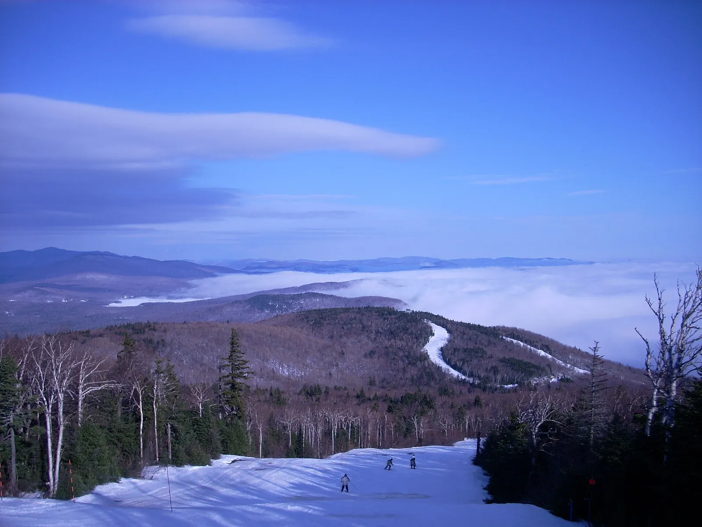

Okemo, Ludlow, Vermont · Ski conditions
Okemo Conditions and Webcams Today
Okemo's webcams today, its opening day, and kid facts: lesson ages, childcare, parking. About 4¾ hours' drive from New York City (Okemo's estimate).
Researched with AI (Miles Rowan) · sources linked and dated · How we check
Okemo's own status
Not open yetOpens Sat, Nov 21 at 9 a.m. (Okemo's hours page, read Nov 14).
Our webcam read
No cam read from us yet. Cam reads show here only when a recent one has passed a separate automated accuracy check.

Coming for the holidays? Christmas in New York City with kids, free and paid
Cam by cam
Okemo's 4 public cams, as named on its cam page (read Nov 14): Summit Cam, Okemo Snow Stake, Sugar House Cam, Roundhouse Cam. Once our reads start, each cam's last read time shows here.
Plan the day with kids
- Lessons: Kids' group lessons are for ages 7 to 14; kids under 7 go in smaller groups by ability. Kids must be potty trained.
- Bring: A helmet for every child in a lesson: the ski school doesn't rent or lend them. Full-day kids' group lessons include lunch.
- Lift and rentals: Not included in lessons; add them at a discount when you book a group lesson.
- Childcare: Okemo Child Care Center takes 18 months to 4 years, full days only; reserve ahead. Drop-off 8 to 9:30 a.m. on weekends and holidays (8:30 to 9:30 midweek), pick-up 3 to 4 p.m.
- Parking: Free. The Clock Tower lot usually fills by 8:30 a.m. on weekends and holidays; overflow lots at Jackson Gore have a free shuttle on weekends and holidays.
- Tubing: Snow tubing and the Timber Ripper mountain coaster: 11 a.m. to 5 p.m. on set dates, weather permitting. Next dates: Dec 17–Dec 20. Ages not listed.
Childcare prices on Okemo's page, read Nov 14:
- Toddler and Twos childcare (18 to 36 months): $210 a full day
- Ready for PreK childcare (37 to 59 months): $195 a full day
- Giggle and Glide (24 to 48 months, about 1 hour on snow): $300 a full day
Okemo's childcare page lists these for a full day; it doesn't say per child. Cancelling costs $75 with 72 hours' notice; no refund after that.
Lift tickets and lessons: Our reader can't open Okemo's ticket and lesson pages, so check live. See Okemo lift tickets.
From Okemo first-timer lessons, Okemo Child Care, Okemo getting here and parking and Okemo hours of operation, read Nov 14.
Getting there from New York City
- Car: about 4¾ hours from New York City and 4½ from Newark (Okemo's estimates).
- Train: Amtrak's Ethan Allen Express runs from New York to Rutland, about 25 miles from Okemo; you'll need a car or taxi from there.
Closer hills for a day trip: skiing near New York City with kids.
If the snow is thin
- Snowmaking covers 98% of Okemo's terrain, by its own count.
- Indoors: Okemo's Spring House Pool and Fitness Center; check its hours on Okemo's hours page.
- Weather and refunds: Okemo's policies page has the rules; we haven't read them yet, so check before you buy.
From Okemo mountain info and Okemo hours of operation, read Nov 14.
How we read the cams: a program looks at Okemo's public webcam pictures and notes only what a picture can show: fresh snow, snow cover, snowmaking, moving lifts, how busy the base looks, visibility and the snow stake. Each read shows its time; after 90 minutes it is marked older, after 6 hours it is hidden. We never say whether terrain is safe, icy, groomed or open; Okemo's own report decides that. We don't show the cam pictures or count people.
Sources: Okemo mountain cams · Okemo hours of operation · Okemo first-timer lessons · Okemo Child Care · Okemo getting here and parking · Okemo mountain info (read Nov 14). We haven't skied Okemo.